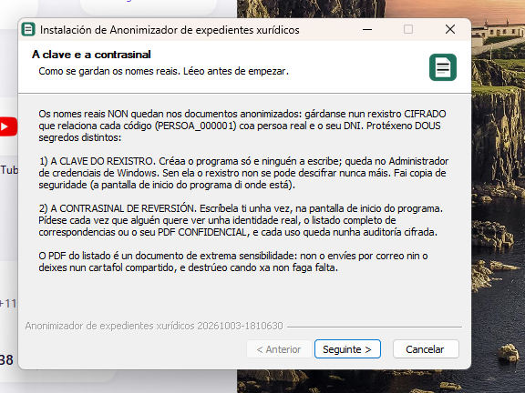
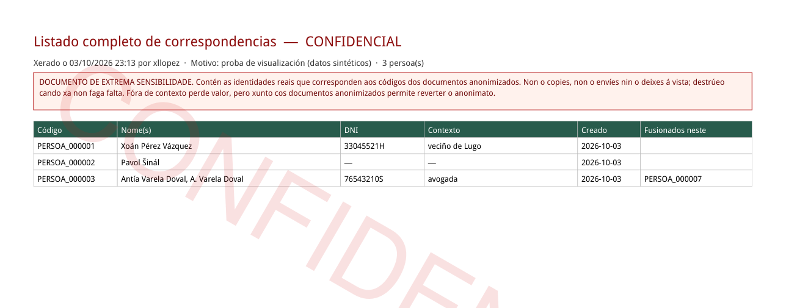

Resumo para quen usa o programa: que se arranxou, que hai de novo, como se mediu e que límites seguen a existir. Substitúe á versión do 27 de setembro de 2026, que xa non se debe distribuír.
A versión nova deixa á vista moitos menos datos persoais, xa non estraga o texto do PDF arredor do que tapa e tapa moito menos o que non é dato persoal (lugares, organismos, cargos). Ademais, inclúe un PDF confidencial co listado de correspondencias e explica mellor como se protexen os nomes reais.
Cifras medidas cos mesmos 280 documentos reais do BOE e do DOG (xullo-decembro de 2025) procesados coas dúas versións. Ver a sección 04.
A versión anterior borraba, ao tapar un nome, palabras das liñas veciñas. Agora o PDF anonimizado conserva o resto do texto intacto.
Agora compróbase automaticamente que cada código garda o nome e o DNI correctos. Así atopáronse e arranxáronse dous casos en que un DNI quedaba asociado á persoa equivocada no rexistro: «don X, con DNI…, e dona Y» e un documento dun anexo que recibía o código de quen asina enriba.
Os nomes reais non quedan nos documentos anonimizados: gárdanse nun rexistro cifrado. Protéxeno dous segredos distintos, que agora se explican por separado no instalador, na pantalla de inicio, no Léeme e no manual:

A táboa que relaciona cada código coa persoa real amósase agora arriba e sen columnas baleiras. Debaixo hai un botón para gardala en PDF: leva a marca de auga «CONFIDENCIAL» en cada páxina, a data, quen o xerou e o motivo. Para xeralo hai que escribir de novo a contrasinal e confirmar un aviso, e queda rexistrado na auditoría.

Quen teña ese PDF ve as identidades reais sen ningunha contrasinal. Fóra de contexto perde valor, pero xunto cos documentos anonimizados permite reverter o anonimato. Non o envíes por correo nin o deixes nun cartafol compartido ou sincronizado coa nube, e destrúeo cando xa non faga falta.
Cada cambio comprobouse cun exemplo inventado (sen datos reais) que fallaba antes do arranxo; o programa ten agora 626 comprobacións automáticas (antes, 397), e pasan todas. Ademais, mediuse con documentos reais e públicos do BOE e do DOG:
| Indicador (280 documentos, xullo-decembro de 2025) | Versión 27/09 | Versión nova |
|---|---|---|
| Nomes completos de particulares á vista (control automático) | 34 en 12 docs | 0 |
| Palabras alleas perdidas no PDF de saída | 7.987 en 217 docs | 5 en 2 docs |
| Avisos de posible sobreanonimización | 418 en 138 docs | 18 en 13 docs |
| Algo non persoal tapado nun sitio e á vista noutro | 323 en 96 docs | 59 en 40 docs |
| Erros no rexistro de nomes reais (código, nome ou DNI) | sen comprobar | 0 |
Nunha mostra de 60 documentos escollidos ao chou, lidos páxina a páxina, a versión do 3 de outubro (anterior a estes últimos arranxos) xa daba 59 de 60 sen ningún dato persoal á vista; os fallos atopados nesa lectura e no resto do lote son os que se arranxaron nesta versión.
O programa recoñece nomes por patróns, táboas oficiais de nomes e apelidos (INE) e un modelo de linguaxe. É moito máis fiable ca antes, pero ningún sistema deste tipo garante o 100 %: un documento cun formato raro pode deixar algo á vista. Antes de entregar un documento anonimizado, bótalle unha ollada, sobre todo ás táboas e ás listaxes de persoas.
Anonimizador-Xuridico-Instalador-20261004-….exe por riba do anterior. O rexistro de nomes reais que xa tiñas consérvase (comprobado).instalar-mac.command ou instalar-linux.sh, como a primeira vez. Novidade: o rexistro de nomes reais pasa a vivir fóra do cartafol do programa (~/Library/Application Support/Anonimizador en Mac, ~/.local/share/anonimizador en Linux), coma en Windows. Se descomprimes a versión nova no mesmo cartafol ca a anterior, o rexistro trasládase só ao abrir o programa. Se a pos noutro cartafol, copia antes o anonimizador-xuridico/datos_rexistro da versión anterior a esa ruta de datos. A clave queda no chaveiro do sistema e segue funcionando aínda que o rexistro cambie de sitio.Anonimizador de expedientes xurídicos · Novidades da versión de outubro de 2026 (20261004) · Outubro de 2026